Machine Tools and Grinding
Lathes · Drilling · Shaping · Planning · Milling · Gear Cutting · Broaching · Grinding
GENCO AE
SSC JE
TSPSC AEE
AP Genco
⭐ Key Points to Remember (Exam-Critical)
- Cutting speed formula for lathe, drilling, milling: \(V = \dfrac{\pi DN}{1000}\) m/min (D in mm, N in rpm).
- Hobbing is the fastest gear-cutting method; works on the generating principle; produces external gears only.
- Gear shaping (Fellows process) can cut internal gears; hobbing cannot.
- Internal gears are made by gear shaping or broaching — not by hobbing.
- Simple indexing: dividing-head worm ratio = 40 : 1; crank turns = 40/N.
- Differential indexing: used when required divisions cannot be obtained by simple indexing (classic example: 119 divisions).
- Grinding wheel rule: Soft wheel for hard material; hard wheel for soft material (self-sharpening principle).
- Wheel grade = bond hardness (A–H soft; I–P medium; Q–Z hard). Structure = grain spacing (porosity).
- Wheel marking sequence: Abrasive – Grain size – Grade – Structure – Bond (e.g., A 36 L 5 V).
- Truing = restores wheel geometry and concentricity. Dressing = exposes fresh sharp abrasive grains.
- Centreless grinding: no centres; axial feed = \(\pi D_R N_R \sin\alpha\) where α = regulating wheel tilt angle.
- Broaching accuracy ≈ 1 μm; tooth sequence: Roughing → Semi-finishing → Finishing.
- Shaper size = maximum stroke length; Planer size = table size / bed length.
- Capstan / turret lathe has no tailstock; used for mass production of small parts.
- Climb milling: cutter rotates same direction as feed → better finish, less tool wear; requires backlash-free machine. Up milling: chip thickness increases from entry to exit.
1. Lathe Operations
1.1 Work-Holding Devices
| Device | Use / Key Fact |
|---|
| Three-jaw (self-centring) chuck | Quick clamping; less accurate; for round/hexagonal stock |
| Four-jaw (independent) chuck | Exact centring; for irregular / asymmetric work |
| Face plate | Large, irregular, or complex jobs that cannot be chucked |
| Collet | Small precision work; high accuracy and repeatability |
| Mandrel | Hollow (bored) workpieces; work mounted on mandrel OD |
| Steady / follower rest | Supports long slender shafts to prevent deflection |
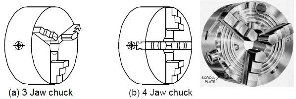
Figure 1.1: Lathe Work-Holding Devices Breakdown (3-Jaw Universal, 4-Jaw Independent, Collet Chuck & Mandrel).
1.2 Lathe Operations
| Operation | Key Fact |
|---|
| Turning | Reduces diameter along the axis |
| Facing | Produces flat end surface; cutting length ≈ D/2 |
| Taper turning | By compound slide, tailstock set-over, or taper attachment |
| Thread cutting | Slowest spindle speed; lead-screw drives carriage |
| Boring | Enlarges existing hole on lathe using single-point tool |
| Knurling | Diamond/straight pattern for grip; displaces metal, no chips produced |
| Parting / grooving | Cuts off workpiece; narrow tool, slow speed |
1.3 Taper Turning Formulas
$$\text{Taper ratio} = \frac{D - d}{l_r}$$
D = larger diameter (mm), d = smaller diameter (mm), \(l_r\) = taper length (mm)
$$y = L\sin\alpha \approx \frac{L(D-d)}{2\,l_r}$$
y = tailstock set-over (mm), L = total job length (mm), α = half-taper angle, \(l_r\) = taper length (mm)
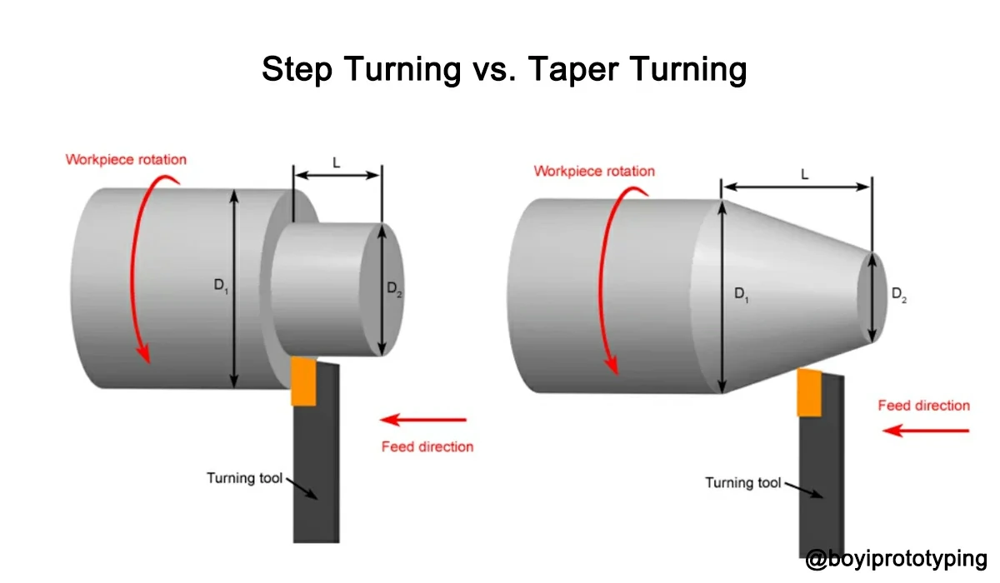
Figure 1.2: Taper Turning Geometry & Tailstock Set-Over Offset ($y \approx \frac{L(D-d)}{2 l_r}$).
Use the approximate form \(y \approx L(D-d)/(2l_r)\) in exam numericals. Valid when α < 10°. If the taper is only on part of the job, L = total job length but \(l_r\) = tapered portion length only.
1.4 Cutting Speed and Machining Time
$$V = \frac{\pi D N}{1000} \qquad T_m = \frac{L}{f \cdot N}$$
V = cutting speed (m/min), D = diameter (mm), N = rpm, \(T_m\) = machining time (min), L = length of cut (mm), f = feed (mm/rev)
1.5 Gearbox Speed Progression Ratio
$$\phi = \left(\frac{N_{\max}}{N_{\min}}\right)^{\!\frac{1}{n-1}}$$
φ = progression ratio, n = number of speed steps. Standard preferred values: 1.06, 1.12, 1.25, 1.41, 1.58, 1.78, 2.0 (R series per IS/ISO). Most common exam value: φ = 1.26 ≈ 1.25.
1.6 Special Lathe Types
| Lathe Type | Key Feature |
|---|
| Engine lathe | General-purpose; lead-screw for threading |
| Capstan / turret lathe | No tailstock; hexagonal turret; mass production of small parts |
| Automatic lathe | Fully automated; no operator needed during machining |
| Vertical turret lathe | Large diameter, heavy work; work rotates on horizontal table |
| Swiss-type automatic | Very small precision parts; sliding headstock |
2. Drilling Machines
2.1 Drill Geometry
| Angle / Feature | Standard Value / Fact |
|---|
| Point (included) angle | 118° for general-purpose drills; 135° for hard / thin materials |
| Helix (rake) angle | Typically 20°–35°; higher helix for softer materials |
| Lip clearance angle | 8°–12° (provides relief behind cutting edge) |
| Chisel edge angle | ≈ 120°–135°; chisel edge does not cut, only extrudes material |
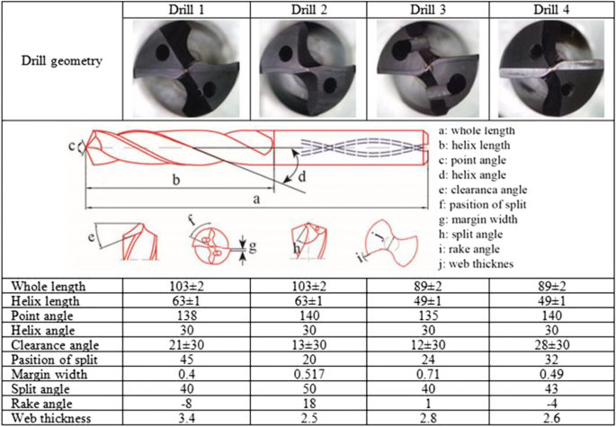
Figure 2.1: Twist Drill Point Angle ($118^\circ$), Helix Angle ($20^\circ\text{--}35^\circ$) & Overtravel ($x \approx 0.3D$).
2.2 Drilling Time
$$T = \frac{t + x}{f \cdot N}$$
T = drilling time (min), t = plate thickness (mm), x = overtravel (mm) = \(\frac{D}{2}\cot\theta\) where θ = half-point angle; f = feed (mm/rev), N = rpm
Overtravel \(x = (D/2)\cot 59° \approx 0.3D\) for standard 118° drill. In exam numericals the overtravel value is usually given directly. Always include overtravel for through holes.
2.3 Hole-Making Operations on Drilling Machine
| Operation | Purpose |
|---|
| Drilling | Produces initial round hole |
| Reaming | Enlarges and finishes hole to accurate size; multi-flute tool |
| Boring | Single-point enlargement for precise diameter and straightness |
| Counterboring | Flat-bottomed cylindrical enlargement for socket-head screws |
| Countersinking | Conical seat for flat-head screws (typically 60° or 90°) |
| Spot facing | Flat cleaned surface around hole for bolt/nut seating |
| Tapping | Cuts internal threads using a tap |
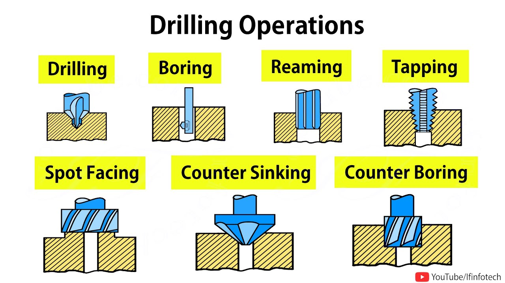
Figure 2.2: Cross-Sectional Comparison of Hole-Making Operations (Drilling, Reaming, Counterboring, Countersinking, Spot Facing).
3. Shaping and Planing
3.1 Shaper vs Planer Comparison
| Parameter | Shaper | Planer |
|---|
| Motion | Tool reciprocates; work feeds transversely | Work (table) reciprocates; tool feeds laterally |
| Work size | Small to medium workpieces | Large, heavy workpieces |
| Size specified by | Maximum stroke length | Table size (width × length) |
| Drive | Crank & slotted link (quick-return) or hydraulic | Rack & pinion or hydraulic |
| Return stroke | Faster than cutting (quick-return mechanism) | Also quick return |
| Productivity | Lower; single-point tool only | Higher; multiple tools simultaneously possible |
3.2 Shaper Cutting Speed
$$V = \frac{N \cdot L \cdot C}{1000}$$
V = cutting speed (m/min), N = strokes/min, L = stroke length (mm), C = cutting time ratio (cutting time / total stroke time ≈ 2/3 for standard crank mechanism)
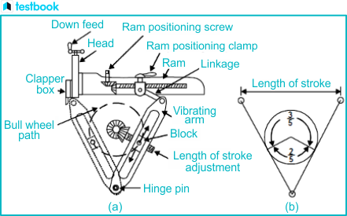
Figure 3.1: Crank & Slotted Link Quick-Return Kinematic Motion Diagram ($\alpha \approx 220^\circ$ cutting stroke vs $\beta \approx 140^\circ$ return stroke, ratio $\approx 1.4\text{--}1.5$).
Quick-return ratio: cutting stroke occupies about 2/3 of the cycle in a standard Whitworth crank mechanism. Return stroke is faster to reduce idle time.
3.3 Planing Additional Facts
- A planer can mount multiple tools simultaneously (gang planing).
- Double-housing planer: two vertical columns; most rigid. Open-side planer: one column; handles wider work.
- Table drive: rack and pinion or hydraulic.
- Planer machining time: \(T_m = W/(f \cdot V_c)\) where W = work width, f = cross-feed per stroke, \(V_c\) = cutting velocity.
4. Milling Operations
4.1 Up Milling vs Climb Milling
| Parameter | Up Milling (Conventional) | Climb Milling (Down Milling) |
|---|
| Cutter rotation vs feed | Opposite to feed | Same as feed |
| Chip thickness at entry | Zero (rubbing at start) | Maximum |
| Chip thickness at exit | Maximum | Zero |
| Tool life | Lower | Higher |
| Surface finish | Poorer | Better |
| Machine requirement | Tolerates backlash | Requires backlash-free machine |
| Force on work | Tends to lift work off table | Pushes work down onto table |
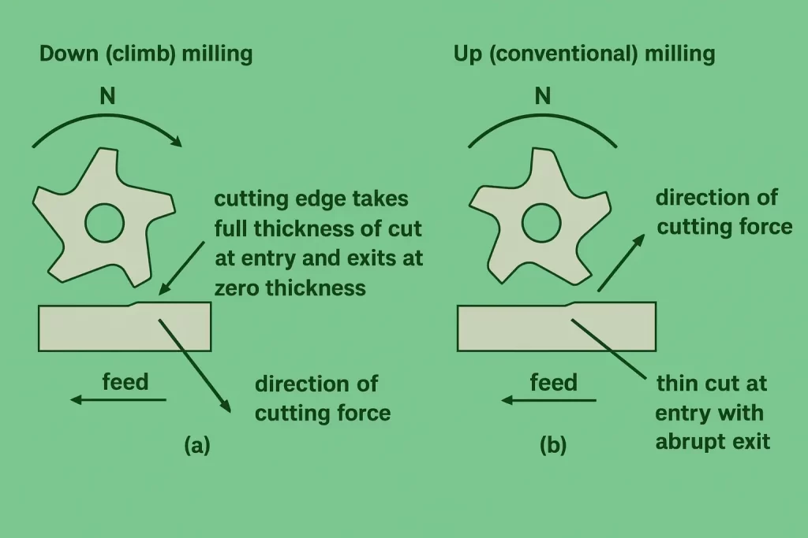
Figure 4.1: Up Milling (Conventional) vs Climb Milling (Down Milling) Cutter Rotation, Chip Thickness & Force Vectors.
4.2 Milling Formulas
$$f_m = f_t \cdot z \cdot N \qquad \text{MRR} = d \cdot b \cdot f_m$$
\(f_m\) = table feed (mm/min), \(f_t\) = feed per tooth (mm/tooth), z = number of teeth, N = rpm, d = depth of cut (mm), b = width of cut (mm)
4.3 Milling Cutter Types
| Cutter Type | Use |
|---|
| Plain / slab milling cutter | Horizontal axis; flat surfaces by peripheral milling |
| Face milling cutter | Vertical axis; machining faces of workpiece |
| End mill | Slots, pockets, profiling; cuts on periphery and end |
| Side and face cutter | Slots and steps; cuts on sides and periphery |
| Form milling cutter | Special profiles: gear tooth spaces, T-slots, dovetails |
| Fly cutter | Single-point tool; light facing cuts |
Gang milling: Two or more cutters on the same arbor, machining different surfaces in a single pass. Universal milling machine: Table can be swivelled in horizontal plane → can cut helical gears and helical cutters.
5. Gear Cutting and Indexing
5.1 Gear Cutting Methods Comparison
| Method | Principle | Speed | Gears Possible | Key Fact |
|---|
| Gear milling (form) | Form cutting; disc or end-mill cutter | Slowest | External spur, helical | One tooth at a time; cutter profile = tooth space |
| Gear hobbing | Generating principle | Fastest | External spur, helical, worm gears | Cannot cut internal gears or bevel gears |
| Gear shaping (Fellows) | Generating principle | Medium | External and internal spur/helical | Uses pinion cutter (gear-shaped) |
| Gear broaching | Form cutting | Fast (single pass) | Internal gears, splines | High tooling cost; mass production only |
| Gear grinding | Generating or form | Slow | External spur, helical | Highest accuracy; finishing operation |
| Gear shaving | Finishing (scraping) | Fast finishing | External gears | Post-hobbing finish; removes 0.01–0.05 mm |
| Bevel gear (Gleason) | Generating | — | Bevel gears | Uses Tregold's approximation |
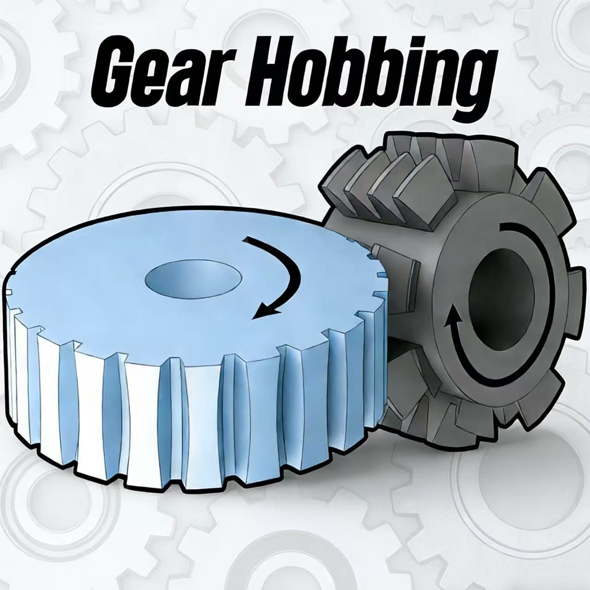
Figure 5.1a: Gear Hobbing Generating Action (Continuous / External Gears Only).
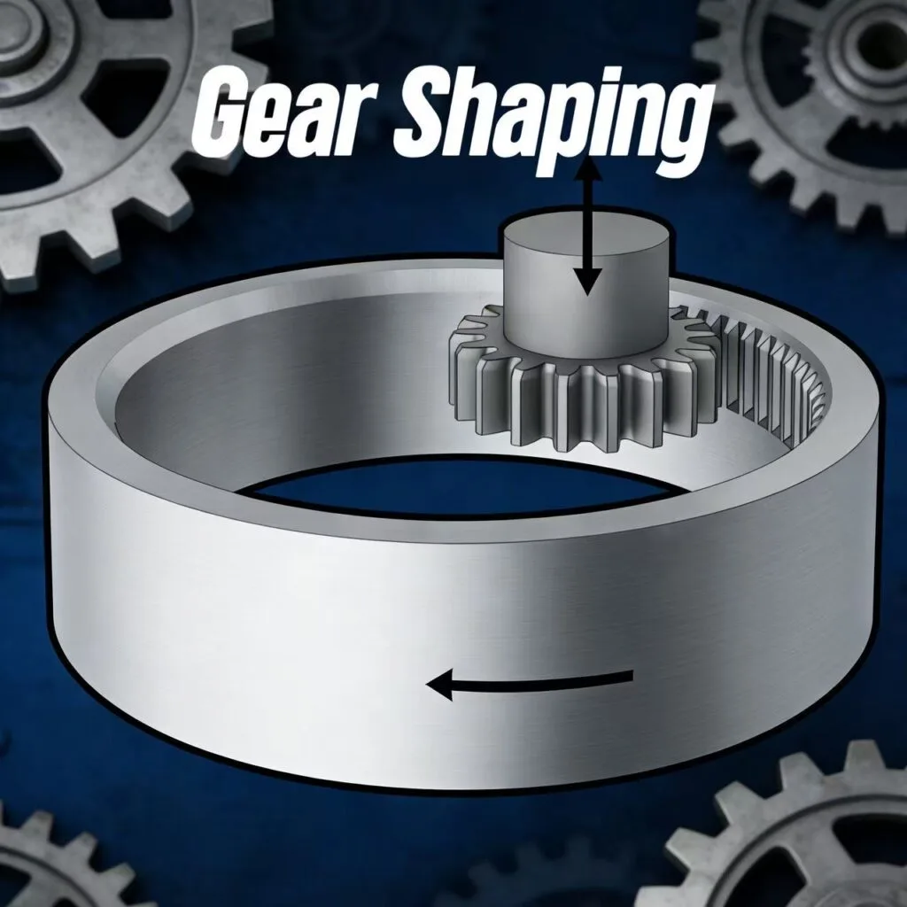
Figure 5.1b: Fellows Gear Shaping (Reciprocating Pinion Cutter / Internal & Shoulder Gears).
5.2 Indexing Formulas
Simple indexing:
$$\text{Crank turns} = \frac{40}{N}$$
N = number of equal divisions required; dividing head worm ratio = 40 : 1
Angular indexing:
$$\text{Crank turns} = \frac{\theta}{9\degree}$$
θ = required angle in degrees (1 full crank turn = 360°/40 = 9° of spindle rotation)
Differential indexing: Used when N cannot be factored to match available index plate hole circles. A change-gear set connects the spindle back to the index plate to provide the correction increment.
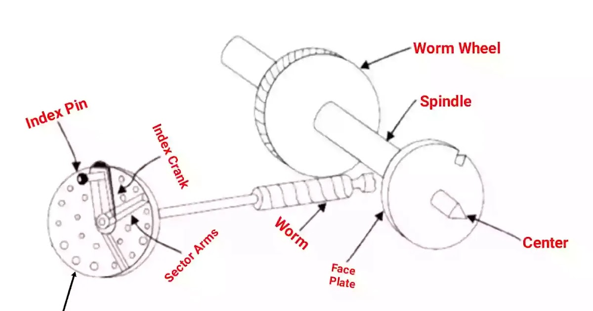
Figure 5.2a: Simple Indexing Mechanism & 40:1 Worm Gear Setup ($\text{Crank Turns} = \frac{40}{N}$).
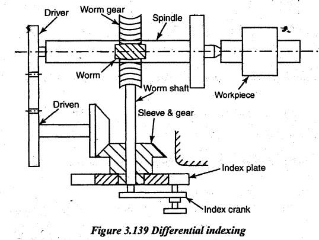
Figure 5.2b: Differential Indexing Gear Train (For Numbers Not Achievable by Simple Indexing).
Standard index plate hole circles: Plate 1: 15, 16, 17, 18, 19, 20. Plate 2: 21, 23, 27, 29, 31, 33. Plate 3: 37, 39, 41, 43, 47, 49. If 40/N cannot be simplified to a fraction whose denominator appears on any plate → use differential indexing.
6. Broaching
6.1 Key Characteristics
| Parameter | Value / Fact |
|---|
| Accuracy achievable | ≈ 1 μm |
| Surface finish | 0.4–1.6 μm Ra |
| Chip load per tooth | Called rise per tooth (RPT) or cut per tooth |
| Tooth sequence | Roughing → Semi-finishing → Finishing (→ Burnishing, sometimes) |
| Cutting motion | Single linear stroke (push or pull); each tooth removes fixed chip thickness |
| Applications | Keyways, splines, internal gears, non-circular holes, flat surfaces; mass production |
| Limitation | High tooling cost; blind holes cannot be easily broached; not for small batches |
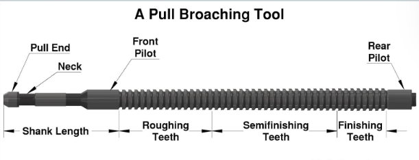
Figure 6.1: Pull Broach Tooth Profile: Pilot, Roughing Teeth (Steep RPT), Semi-Finishing & Finishing Teeth (Zero RPT).
$$L_{\text{broach}} = n_t \cdot p$$
\(L_{\text{broach}}\) = broach length, \(n_t\) = number of teeth, p = tooth pitch (mm)
Pull broaching (most common): broach in tension — stronger and safer. Push broaching: broach in compression — limited to shorter broaches to avoid buckling. Internal broaching: pulled through a starter hole. Surface broaching: broach (or work) moves across the external surface.
7. Grinding Machines
7.1 Types of Grinding
| Type | Work Shape | Key Feature |
|---|
| Surface grinding | Flat surfaces | Reciprocating or rotary table; wheel face or periphery |
| External cylindrical grinding | Straight or tapered external surfaces | Work between centres or in chuck; wheel and work rotate |
| Internal cylindrical grinding | Internal cylindrical / tapered holes | Small wheel; high rpm required |
| Centreless grinding | Cylindrical bars / rods | No centres; supported by blade + regulating wheel |
| Tool and cutter grinding | Cutting tools | Sharpens multipoint cutters (drills, milling cutters, etc.) |
| Gear grinding | Gear tooth flanks | Highest accuracy; form or generating wheel |
| Thread grinding | Threaded surfaces | Precision threads; single-rib or multi-rib wheel |
7.2 Centreless Grinding — Axial Feed
$$f_a = \pi \cdot D_R \cdot N_R \cdot \sin\alpha$$
\(f_a\) = axial feed / workpiece advance (mm/min), \(D_R\) = regulating wheel diameter (mm), \(N_R\) = regulating wheel speed (rpm), α = tilt angle of regulating wheel (typically 2°–8°)
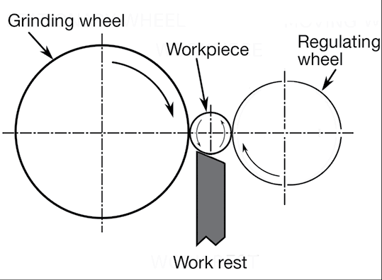
Figure 7.1: Centreless Grinding Machine Setup: Grinding Wheel, Regulating Wheel ($\alpha = 2^\circ\text{--}8^\circ$), Work Rest Blade & Axial Feed ($f_a = \pi D_R N_R \sin\alpha$).
In centreless grinding: regulating wheel controls workpiece speed and axial feed via tilt angle α; grinding wheel removes material; work rest blade supports workpiece from below.
7.3 Grinding Wheel Marking System
$$\underbrace{A}_{\text{Abrasive}} - \underbrace{36}_{\text{Grain size}} - \underbrace{L}_{\text{Grade}} - \underbrace{5}_{\text{Structure}} - \underbrace{V}_{\text{Bond}}$$
Figure 7.2: Standard ISO/IS Grinding Wheel Marking System Breakdown (Abrasive, Grain Size, Grade/Hardness, Structure/Porosity, Bond Type).
| Position | Parameter | Common Options |
|---|
| 1. Abrasive | Abrasive material | A = Al&sub2;O&sub3; (Aluminium oxide / Alundum); C = SiC (Silicon carbide / Carborundum); B = CBN; D = Diamond |
| 2. Grain size | Grit number (smaller = coarser) | 8–24 coarse; 30–60 medium; 70–120 fine; 150–600 very fine |
| 3. Grade | Bond hardness | A–H = soft; I–P = medium; Q–Z = hard |
| 4. Structure | Grain spacing (porosity) | 1 = dense; 15 = open. Lower = denser; open structure for soft/ductile materials |
| 5. Bond | Bond material | V = Vitrified; R = Resinoid; S = Silicate; E = Shellac; B = Rubber; O = Oxychloride; M = Metal |
7.4 Abrasive Selection Guide
| Abrasive | Best For | Trade Name |
|---|
| Aluminium oxide (Al&sub2;O&sub3;) | Ferrous metals: steel, HSS, cast iron | Alundum, Corundum |
| Silicon carbide (SiC) | Non-ferrous: Al, Cu, brass; hard non-metals; cast iron | Carborundum |
| CBN (Cubic Boron Nitride) | Hardened steels, superalloys | Borazon |
| Diamond | Ceramics, carbide tools, glass, stone | Natural or synthetic |
7.5 Wheel Grade Selection Rules
| Material Being Ground | Wheel Grade | Reason |
|---|
| Hard material (e.g., hardened steel) | Soft (A–H) | Dull grains break away easily, exposing fresh sharp grains (self-sharpening) |
| Soft material (e.g., mild steel, Al) | Hard (Q–Z) | Grains do not dull quickly; bond holds them longer |
| Large contact area | Soft grade | More grains in contact → higher heat → softer bond self-sharpens |
| Small contact area | Hard grade | Fewer grains → harder bond retains grains longer |
7.6 Truing vs Dressing
| Term | Definition | Tool Used |
|---|
| Truing | Restores original geometry, shape, and concentricity; eliminates out-of-roundness | Diamond tool (single-point or blade) |
| Dressing | Removes dull grains and bond bridges; exposes fresh sharp abrasive grains; restores cutting action | Star dresser, diamond roll, abrasive stick |
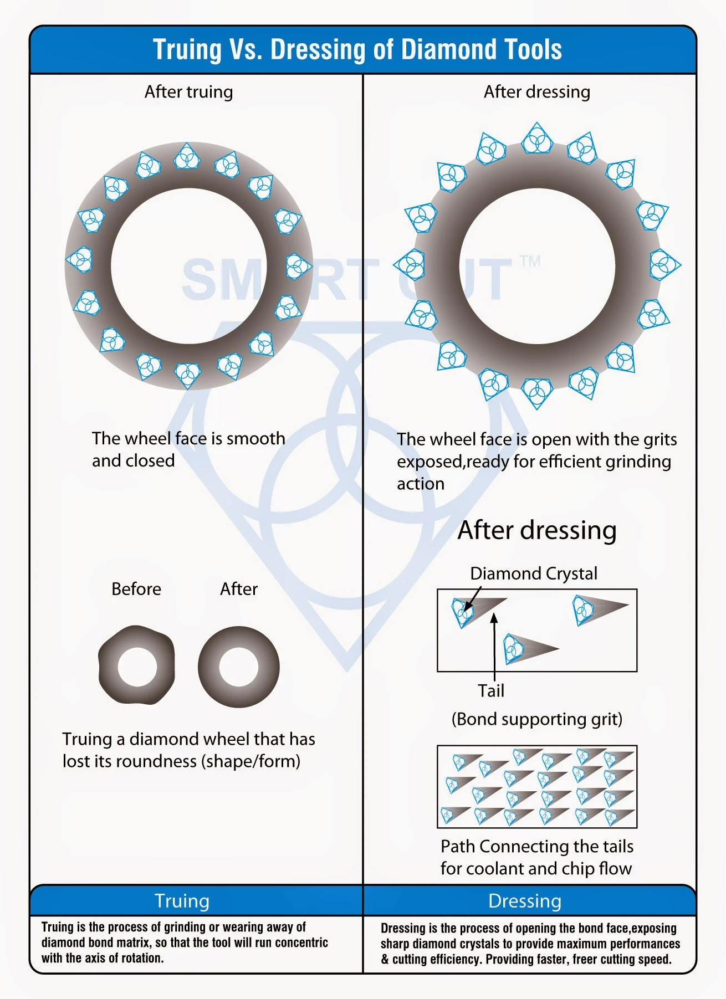
Figure 7.3: Truing vs Dressing Mechanics: Restoring Concentricity & Geometry (Truing) vs Exposing Fresh Sharp Grains (Dressing).
Truing = shape / geometry; Dressing = sharpness / cutting action. Both are often done simultaneously with a diamond tool, but conceptually they are distinct operations.
7.7 Why High Grinding Speed Helps
- Reduces force per grit (each grit engages for shorter time).
- Offsets the high negative rake angle of abrasive grains.
- Produces thinner chips → better surface finish.
- Reduces overall grinding force and power per unit MRR.
| Formula | Application |
|---|
| \(V = \dfrac{\pi D N}{1000}\) | Cutting speed — lathe, drilling, milling |
| \(T_m = \dfrac{L}{f \cdot N}\) | Machining time — lathe turning |
| \(y \approx \dfrac{L(D-d)}{2\,l_r}\) | Tailstock set-over — taper turning |
| \(\phi = \left(\dfrac{N_{\max}}{N_{\min}}\right)^{\!1/(n-1)}\) | Gearbox progression ratio |
| \(T = \dfrac{t + x}{f \cdot N}\) | Drilling time with overtravel |
| \(V_{\text{shaper}} = \dfrac{N \cdot L \cdot C}{1000}\) | Shaper cutting speed |
| \(f_m = f_t \cdot z \cdot N\) | Milling table feed |
| \(\text{MRR} = d \cdot b \cdot f_m\) | Milling material removal rate |
| \(\text{Crank turns} = \dfrac{40}{N}\) | Simple indexing (dividing head) |
| \(f_a = \pi D_R N_R \sin\alpha\) | Centreless grinding axial feed |
9. Miscellaneous High-Yield Facts
9.1 Finishing Processes Comparison
| Process | Method | Typical Ra | Key Fact |
|---|
| Honing | Abrasive sticks; reciprocating + rotating motion | 0.1–0.8 μm | Corrects cylindrical bore geometry; straightness and roundness |
| Lapping | Loose abrasive between lap and work; very slow | 0.01–0.4 μm | Highest accuracy and flatness; little heat generated |
| Superfinishing | Abrasive stone; oscillatory + slow rotation | 0.01–0.1 μm | Removes fragmented surface layer; very light pressure |
| Buffing | Soft wheel + compound | Very low | Cosmetic finish; no dimensional accuracy |
| Burnishing | Hard tool presses surface plastically | Low | No chip removal; improves hardness and finish |
9.2 Bond Types for Grinding Wheels
| Bond | Symbol | Key Use / Property |
|---|
| Vitrified | V | Most common; porous; rigid; unaffected by water/oil/heat up to 1050°C |
| Resinoid | R | High-speed rough grinding; cut-off wheels; most flexible organic bond |
| Rubber | B | Thin cut-off wheels; regulating wheels in centreless grinding |
| Silicate | S | Tools requiring cool grinding (edge tools); mild bond |
| Shellac | E | High finish on cam and roller grinding; thin wheels |
| Metal | M | Diamond and CBN wheels; maximum wheel strength |
9.3 Miscellaneous MCQ Facts
- Horizontal boring machine: Tool rotates; work is stationary (opposite to lathe).
- Tool dynamometer: Measures cutting forces during machining.
- Knurling: Produces grip pattern by plastic deformation; no chip removal.
- Thread cutting on lathe: Lead-screw drives carriage; speed = thread pitch per revolution.
- Radial rake angle for HSS milling cutters: generally positive.
- Open structure grinding wheel (high structure number): for soft/ductile materials requiring large chip clearance.
- Internal gears: produced by gear shaping or broaching — NOT by hobbing.
- Gear shaving: a finishing operation performed after hobbing; not a primary gear-cutting method.
10. Synopsis for Quick Review for Exam
10.1 Turning & Lathe Basics
- Lathe: workpiece rotates; tool is fed linearly.
- Horizontal borer: tool/spindle rotates; workpiece usually stationary.
- Centre lathe: best for repair work and general workshop jobs.
- Four-jaw chuck: exact centering; jaws are independent.
- Three-jaw chuck: quick self-centering for round/symmetrical jobs.
- Face plate: irregular and odd-shaped jobs.
- Collet chuck: small precision round workpieces.
- Mandrel: hollow workpieces.
- Lathe dog: work held between centers.
- Tailstock: not part of carriage.
- Carriage parts: saddle, cross-slide, compound rest, tool post, apron.
- Concentric circles on chuck face: quick approximate centering.
- Lead screw + half-nut: thread cutting feed.
- Rack and pinion: manual carriage movement.
- Longitudinal feed: tool moves parallel to lathe axis.
- Cross feed: tool moves perpendicular to lathe axis.
- Turning taper angle: \(\tan\alpha=(R-r)/L\).
- Multi-start thread lead: \(\text{Lead}=n\times\text{Pitch}\).
10.2 Taper Turning & Related MCQs
- Tailstock offset: external tapers only.
- Compound rest: suitable for internal tapers.
- Taper attachment: internal and external tapers.
- Brown & Sharpe taper: milling machine spindle taper.
- Morse taper: drills, tailstocks, and general machine spindles.
10.3 Drilling, Reaming, Boring, Counter Operations
- Drilling: makes the hole.
- Boring: enlarges an existing hole.
- Reaming: finishes hole to correct size and better finish.
- Counterboring: cylindrical enlargement at hole mouth.
- Countersinking: conical enlargement/chamfer at hole mouth.
- Spot facing: flat seating surface around a hole.
- Trepanning: large hole by cutting periphery and leaving core.
- Blind-hole drilling travel: thickness + drill point allowance + over-travel.
- Drilling point allowance: drill point causes extra travel beyond thickness.
- Twist drill: most common drill.
- Step drill: sheet metal.
- Spot drill: starting/locating holes.
- Spade drill: large holes.
- Carbide-tipped drills: glass, ceramics, tiles, brittle hard materials.
10.4 Shaper, Planer, Slotter
- Shaper: single-point tool reciprocates; workpiece stationary.
- Planer: workpiece reciprocates; used for large heavy jobs.
- Slotter: vertical shaper; best for internal keyways, splines, internal gears.
- Shaper operations: slots, grooves, keyways, flats, angular surfaces.
- Shaper stroke ratio: forward : return = 3 : 2.
- Hydraulic shaper: nearly constant cutting speed.
- Mechanical shaper: simpler, variable cutting speed.
- Hydraulic shaper disadvantage: stopping point may vary with cutting resistance.
- Shaper cutting speed: \(V=\dfrac{NL}{1000C}\).
- Stroke time in shaper: one bull-gear revolution gives one cycle.
- Planing on lathe: impossible.
10.5 Milling
- Climb (down) milling: better surface finish, less rubbing, better tool life.
- Up (conventional) milling: chip thickness 0 → max; more rubbing.
- Up milling: workpiece tends to lift.
- Down milling: workpiece is pressed downward.
- Chip thickness in slab milling: increases with feed per tooth/work feed.
- Gang milling: two or more cutters on same arbor simultaneously.
- Face milling: good for flat surfaces.
- Slab milling cutter: plain flat surfaces.
- Profile milling cutter: involute gear tooth profile on milling machine.
- Hobbing: generating method for gears.
- Hobbing: spur, helical, worm gears; not bevel gears.
- Gear milling: form cutting method.
- Universal rolling mill: both horizontal and vertical rolls.
- 4-high mill: large rolls are backup rolls.
- Milling cutter mount: on arbor.
- Indexing on milling: simple, compound, differential, direct.
- Differential indexing: any number of equal divisions.
- Simple indexing: \(\text{crank turns}=\dfrac{40}{N}\).
- 119 divisions: differential indexing.
- Direct indexing: fixed divisions only.
- Compound indexing: extends simple indexing but not universal.
- Simple indexing hole movement: fraction = holes moved / holes in circle.
- Milling cutter spindle speed: cone pulley + back gear gives direct and indirect speeds.
10.6 Grinding
- Grinding wheel designation: abrasive–grit–grade–structure–bond.
- Example A 36 L 5 V: A = Al2O3, 36 = grit, L = grade, 5 = structure, V = vitrified bond.
- Grade of wheel: bond holding power / wheel hardness.
- Abrasive type: A = aluminium oxide, C = silicon carbide, D = diamond.
- Carborundum: silicon carbide.
- Natural abrasives: diamond, garnet, emery.
- Synthetic abrasive: carborundum.
- Coarse grit: low grit number like 10.
- Fine grinding wheel: high grit number.
- Soft wheel: used for hard materials.
- Hard wheel: used for soft materials.
- Hard workpiece → soft wheel; soft workpiece → hard wheel.
- HSS/tool steel grinding: Al2O3.
- SiC: cast iron, non-ferrous materials, carbides.
- Diamond: not for steel; used for carbides, ceramics, glass.
- Grinding wheel loading: chips clog pores in ductile materials.
- Grinding wheel glazing: grains become dull.
- Dressing: removes loaded chips and dull grains.
- Trueing: restores wheel geometry.
- Centreless grinding: high production; no centers/chucks.
- Regulating wheel: controls rotation and axial feed.
- Grinding wheel: removes material.
- Regulating wheel inclination: about 3°–8°.
- Workpiece center in centreless grinding: slightly above wheel-center line.
- Centreless axial feed depends on: regulating wheel diameter and speed.
- Bearing outer races: centreless grinding.
- Grinding wheel used for soft material: coarse grained.
- Surface roughness in drilling: roughly 1.6–6.3 μm Ra.
- Tumbling: not a fine finishing operation.
- Honing: better productivity than lapping.
- Lapping: highest precision and finish, but slow.
- Honing: cylindrical hole finish, size, roundness, straightness.
- Lapping: very small material removal with loose abrasive.
- Superfinishing: fine abrasive finishing.
- Buffing: smooth/lustrous finish with loose abrasive.
- Polishing: bonded abrasive on wheel/strop.
- Burnishing: non-abrasive plastic deformation.
- Abrasives not used in: burnishing.
- Grinding wheel grade letters: A–G very soft, H–K soft, L–O medium, P–S hard, T–Z very hard.
10.7 Cutting Tool Materials & Cutting Conditions
- HSS: highest toughness among common cutting tool materials.
- HSS hot hardness: about 600–650°C.
- HSS cutting speed for mild steel: about 30 m/min.
- HSS cutting speed for cast iron: about 20 m/min.
- Carbide tools: much higher cutting speed than HSS.
- Carbide tool for free-cutting mild steel: around 70 m/min may still suit HSS in MCQ context.
- Tool life decreases due to: heat, chipping, gradual wear.
- Chipping: mechanical impact failure.
- Work hardening near cutting edge: increases wear.
- Lead in free-machining steel: acts as solid lubricant.
- Lead reduces: cutting forces, friction, tool wear.
- Free-machining steel: Pb helps machinability; S helps chip breaking.
- High cutting speed: reduces tool-chip friction and BUE.
- Lower rake angle: increases friction.
- Discontinuous chips: low speed + small rake angle.
- Continuous chips: high speed + large rake angle.
- Built-up edge: reduced by higher speed.
- Heat distribution in turning: mostly chip, then tool, then work.
- Typical heat split: 70 : 20 : 10 in chip : tool : work.
- Tool-chip friction: reduced by increasing cutting speed.
- Cutting edge wear on hard materials: soft wheel/grain release analogy not applicable here; tool material must retain hot hardness.
- Cemented carbide binder: cobalt.
- 18-4-1 HSS: 18% W, 4% Cr, 1% V.
- Hot hardness order: Ceramics > Cermets > Carbide > HSS.
10.8 Gear Manufacturing
- Hobbing: generating principle.
- Gear shaving: gear finishing.
- Gear lapping, shaving, grinding: all finishing processes.
- Internal gears: gear shaping with pinion cutter.
- Hobbing cannot cut: internal gears and bevel gears.
- Bevel gears: not by hobbing.
- Gear shaper: can cut internal and external gears.
- Gear lapping: fine finishing.
- Gear grinding: best accuracy on hardened gears.
- Gear manufacturing sequence (alloy steel): turning → hobbing → shaving → heat treatment.
- Very accurate screw threads: thread grinding.
- Triple-start screw: lead = 3 × pitch.
- Spur/helical/worm gears: suitable for hobbing.
- Gear shaping: useful where hobbing is unsuitable.
10.9 Rolling, Forging, Casting, Forming
- Radial drilling machine: heavy/large workpieces can be drilled without moving them.
- Workholding in radial drill: strap clamps and T-bolts.
- V-block: cylindrical workpieces.
- Machine vice: small regular jobs.
- Trimming: removes flash from forged component.
- Swaging: forging by forcing through dies.
- Perforating: making multiple small holes.
- Knurling: chipless surface patterning on lathe.
- Knurling purpose: better grip.
- Knurling machine: lathe.
- Buffing: smooth surface.
- Carbide-tipped drill: hard brittle materials like glass.
- Twist drill point angle: standard ~118° general purpose.
10.10 Surface Finish & Machining Quality
- Climb milling: better finish than up milling.
- Up milling: poorer finish and more tool wear.
- Face milling: flat surface finishing.
- Honing vs lapping: honing faster; lapping more accurate.
- Turned surface roughness: depends on feed, speed, tool, rigidity.
- Thread chasing: thread cutting by chasing tool.
- Piston tin plating: reduces scoring/scuffing.
- Lead screw to carriage: through half-nut.
- Rack and pinion: not lead screw drive.
- Chipping at tool edge: reduces tool life.
- Grinding wheel loading: especially in ductile materials.
- Glazing: dull grains.
- Dressing vs trueing: cleaning/sharpening vs restoring geometry.
10.11 Quick Numeric/Formula Points
- Shaper cutting speed: \(V=\dfrac{NL}{1000C}\).
- Milling chip thickness: proportional to feed per tooth.
- Drilling travel (through hole): thickness + drill-point allowance + over-travel.
- Blind-hole drill travel: depth + drill-point allowance.
- Taper angle: \(\tan\alpha=\dfrac{R-r}{L}\).
- Simple indexing: crank turns \(=\dfrac{40}{N}\).
- Gearbox progression ratio: next spindle speed / previous spindle speed.
- Feed per tooth in milling: feed rate / (rpm × number of teeth).
- Centreless feed relation: depends on regulating wheel diameter, speed, and inclination.
- Shaper stroke time: \(T=30/N\) for one stroke when bull gear speed is \(N\) rpm.
- Depth of cut roughing: about 1–5 mm.
- Roughing vs finishing: roughing = larger DOC, finishing = smaller DOC.
- Surface roughness trend: drilling rougher than reaming/honing/lapping.
- Grinding wheel abrasive size 10: coarse.
- High speed milling cutter radial rake: about 10°–15°.
- Aluminium machining with carbide: positive rake, often around 15°.
10.12 ⚡ MCQ Traps & Confusables
- Up vs Down milling: up milling lifts workpiece; down milling presses it down.
- Better finish: climb milling, not up milling.
- Tool wear causes: heat, chipping, gradual wear, work hardening.
- Hobbing: generating method, but not for bevel or internal gears.
- Internal gears: shaping with pinion cutter, not hobbing.
- Reaming vs boring: reaming finishes size; boring enlarges hole.
- Countersinking vs counterboring: conical vs cylindrical enlargement.
- Spot facing: flat seat around hole.
- Tailstock: not part of carriage.
- Four-jaw chuck: exact centering; three-jaw chuck = quick self-centering.
- Face plate: irregular workpieces; not collets or chucks.
- Centreless grinding: high production; regulating wheel controls feed.
- Grinding wheel grade: bond hardness, not abrasive hardness.
- Abrasive grain number: low number = coarse, high number = fine.
- Soft wheel: for hard material; hard wheel: for soft material.
- Burnishing: non-abrasive; buffing/polishing use abrasives.
- Honing vs lapping: honing is faster; lapping is more precise.
- Lathe cannot do planing: planing belongs to planer.
- Horizontal borer vs lathe: borer tool rotates; lathe work rotates.
- Lead screw motion to carriage: through half-nut, not rack and pinion.
- Longitudinal feed: parallel to lathe axis.
- Cross feed: perpendicular to lathe axis.
- Drill travel: include drill-point allowance for through/blind holes.
- Blade in back saw: cuts on forward/push stroke.
- Standard milling cutter spindle taper: Brown and Sharpe.
- Carborundum: silicon carbide, not a natural abrasive.
- Diamond: not used for steel grinding.
- Cemented carbide binder: cobalt.
- Lead in free-machining steel: solid lubricant.
- Tumbling: deburring/mass finishing, not fine finishing.
- Three-jaw chuck: not ideal for exact centering compared with four-jaw.
- Three-start thread: lead = 3 × pitch.
- Quick-return shaper: forward stroke slower than return stroke.
10.13 🗝 One-Liners to Memorize
- Lathe: work rotates, tool feeds.
- Carriage: saddle + cross slide + compound rest + tool post + apron.
- Face plate: irregular jobs.
- Four-jaw chuck: exact centering.
- Reaming: correct size + finish.
- Countersinking: chamfer.
- Counterboring: cylindrical recess.
- Trepanning: large hole without drilling full area.
- Shaper: tool reciprocates.
- Planer: work reciprocates.
- Slotter: internal keyways and internal gears.
- Climb milling: best finish.
- Up milling: more rubbing, poorer finish.
- Hobbing: generating gear teeth.
- Gear shaving/lapping/grinding: finishing processes.
- Centreless grinding: high production.
- HSS: high toughness, low hot hardness.
- Al2O3: steel and HSS grinding.
- SiC: cast iron and non-ferrous grinding.
- Cobalt: cemented carbide binder.
- Burnishing: no abrasive.
- Lead screw + half-nut: threading feed.
- Tailstock offset: external tapers only.
- Compound rest: internal tapers.
- Differential indexing: any number of divisions.
- 108? No, standard drill point for general drilling is 118°.
- Tin-coated piston: prevents scoring.
📋 Final Quick-Fire Checklist
- \(V = \pi DN/1000\) — lathe, drill, mill cutting speed.
- Tailstock set-over: \(y \approx L(D-d)/(2l_r)\); distinguish total job length L from taper length \(l_r\).
- Milling: \(f_m = f_t \cdot z \cdot N\); MRR \(= d \cdot b \cdot f_m\).
- Hobbing = fastest = generating = external gears only.
- Gear shaping and broaching can produce internal gears; hobbing cannot.
- Gear shaving = finishing operation (post-hobbing).
- Differential indexing: for 119, 99, 121, and numbers not achievable by simple indexing.
- Grinding wheel: Soft wheel → hard material; Hard wheel → soft material.
- Wheel marking A–36–L–5–V: Al&sub2;O&sub3;, medium-fine grit, L-grade, structure 5, vitrified bond.
- Carborundum = Silicon Carbide (SiC); best for non-ferrous metals and cast iron.
- Truing ≠ Dressing: Truing = geometry; Dressing = sharpness.
- Centreless grinding: no centres; axial feed via regulating wheel tilt angle α.
- Broaching accuracy ≈ 1 μm; tooth sequence: Roughing → Semi-finishing → Finishing.
- Shaper: size = stroke length; Planer: size = table size.
- Capstan/Turret lathe: NO tailstock.
Machine Tools & Grinding — GENCO / SSC-JE / TSPSC Revision Guide | Module 2 of 6